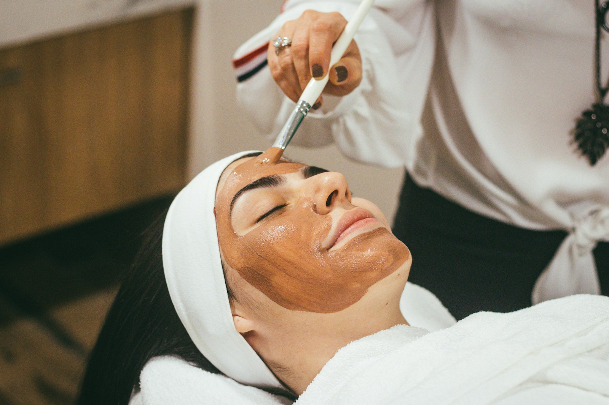

SKJØNNHET. UTEN FASIT.PULCHÉR — THE BEAUTY EDIT / 01
ET LITE ØYEBLIKK. ET HELT EGET UTTRYKK.
PERFEKT
hud
Pleie og velvære med huden din i fokus.
01 — EN ANNEN TYPE SKJØNNHET
Du trenger ikke
å bli en annen.
Bare mer deg.
p.
«Perfekt» er personlig. En hud du trives i. En farge som sier noe om deg. Vi lar skjønnhet handle om uttrykk, velvære og de små detaljene du velger selv.
INDIVIDUALITY LOOKS GOOD ON YOU.
01 / SKIN RITUALSHUD HAR TEKSTUR. OG HISTORIE.Mer glød.
Mer glød.
Mindre
perfeksjon.
Hud er levende. Den forandrer seg. Derfor begynner god pleie med å forstå huden du har, fremfor å jage den du ser på en skjerm.
FINN DITT HUDRITUAL02 — TID SOM BARE ER DIN
Velg din pause.
Hud, negler, vipper og bryn.
Utforsk behandlingene våre.
Make it
personal.
DIN TUR SKIN. NAILS. LASHES. BROWS. WAX.PULCHÉR ATELIER